Alex Mann
2022. Well, this isn't coming out in 2022. I'm writing to you from here in the future, of January 2023. I didn't much feel like writing when my usual time rolled around (more on that in a sec), but I am still happy to have found the time to do this tradition for myself. It's a nice reflective thing that I've inherited from my mother and her mother. I find as I get older I'm taking on more and more traits of those I love, intentionally. Holding onto pieces of folks as mementos, cherishing little turns of phrase or habits. I wish my body weren't also taking up this tradition, but hey, I have my grandfather's hairy tragus and that's a thing now.
A few years back I wrote a list of charities that you might consider donating too based on my perceived ills in the world. Please, as always, consider supporting the community around you more. You're probably more blessed than you know.
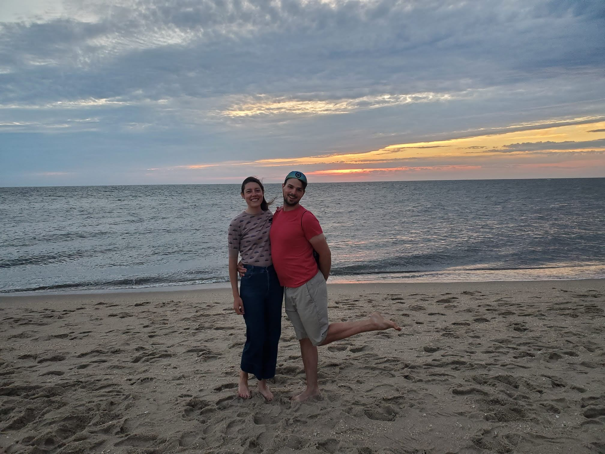
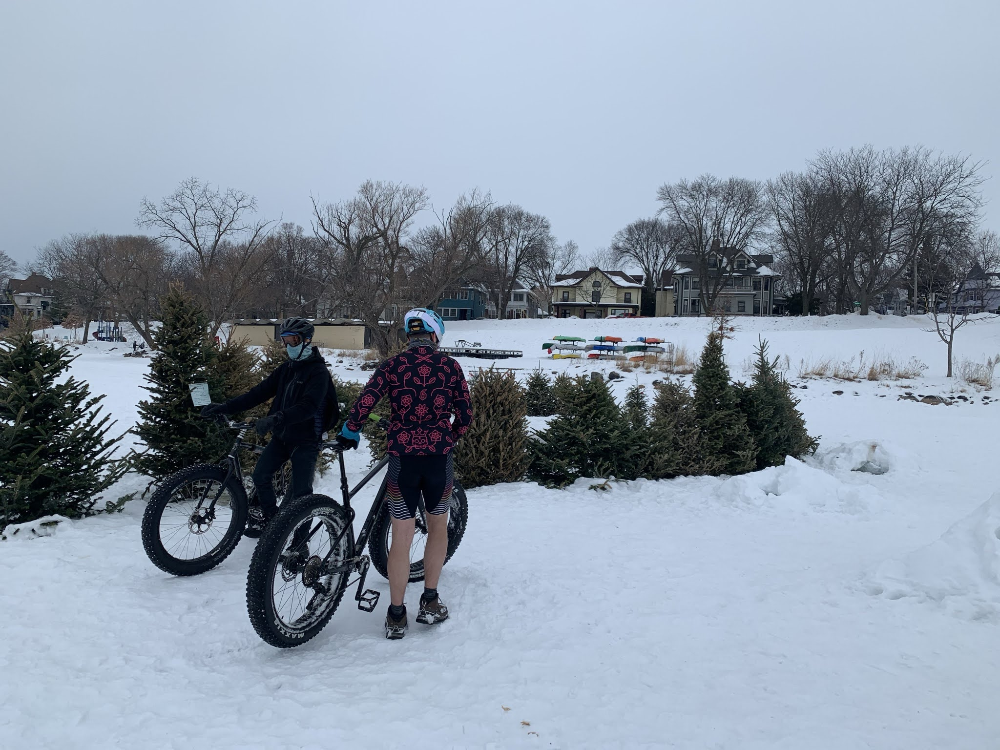
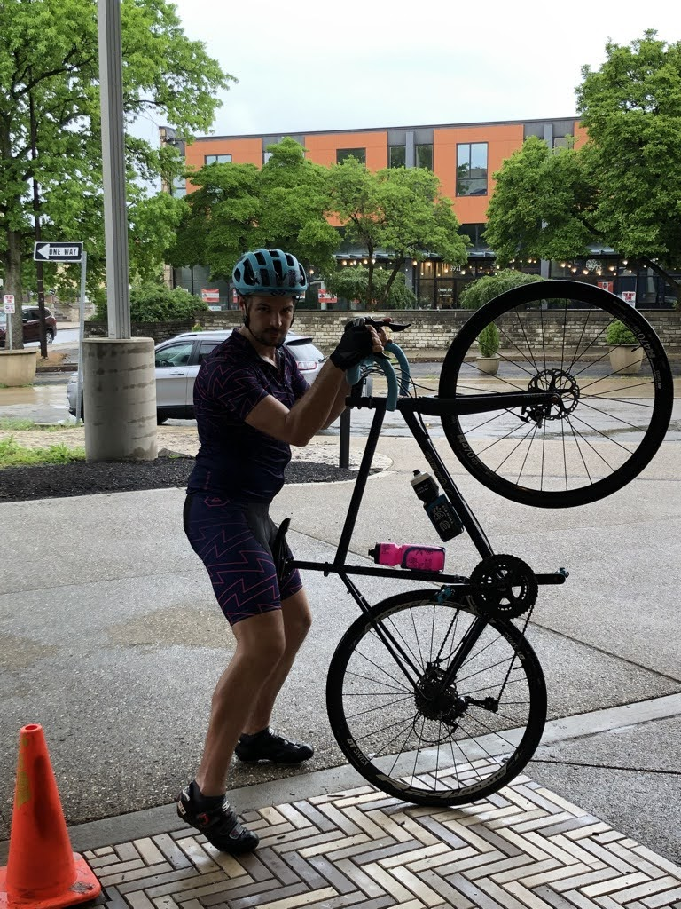
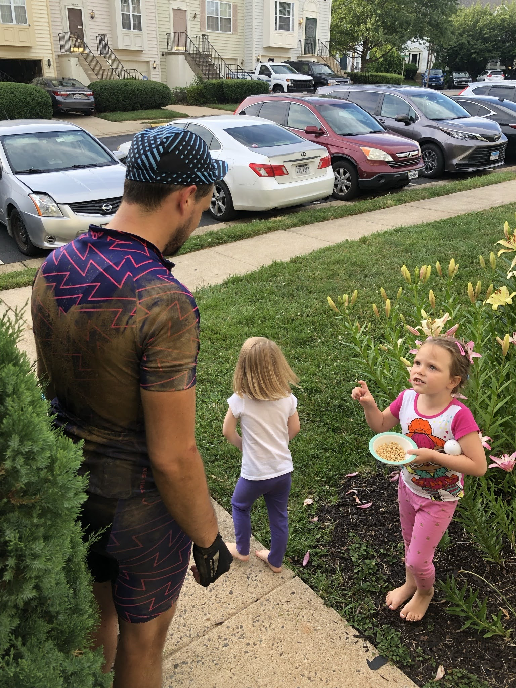
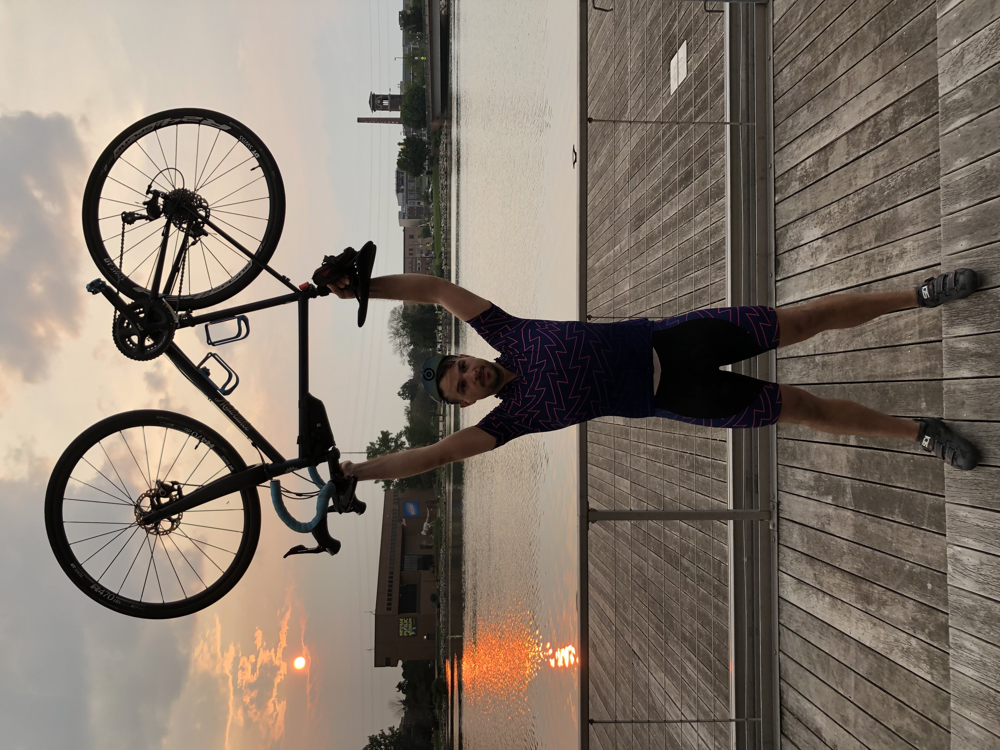
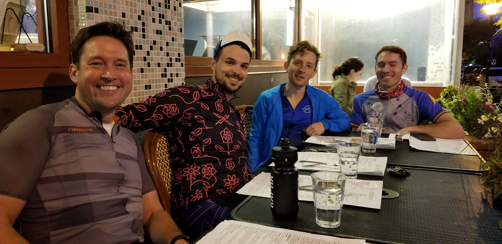
I
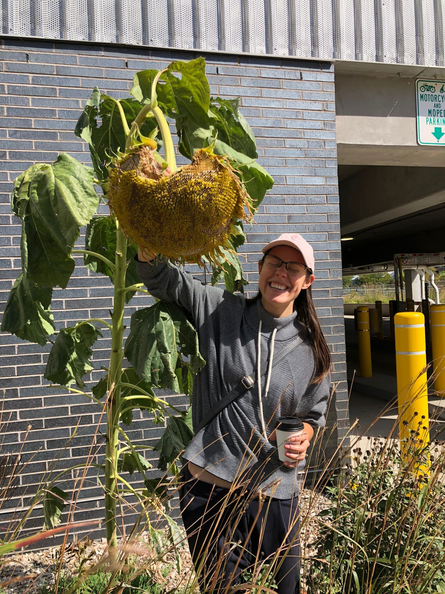
Natalie is probably a PhD Candidate now! We are saying "probably" because technically she hasn't heard back from her panel on this yet...but they all keep treating her as if she's a candidate, so "probably". Most of her news relates to writing, and applying to many many fellowships around the country. There's a strong chance we'll be bothering a city near you soon!
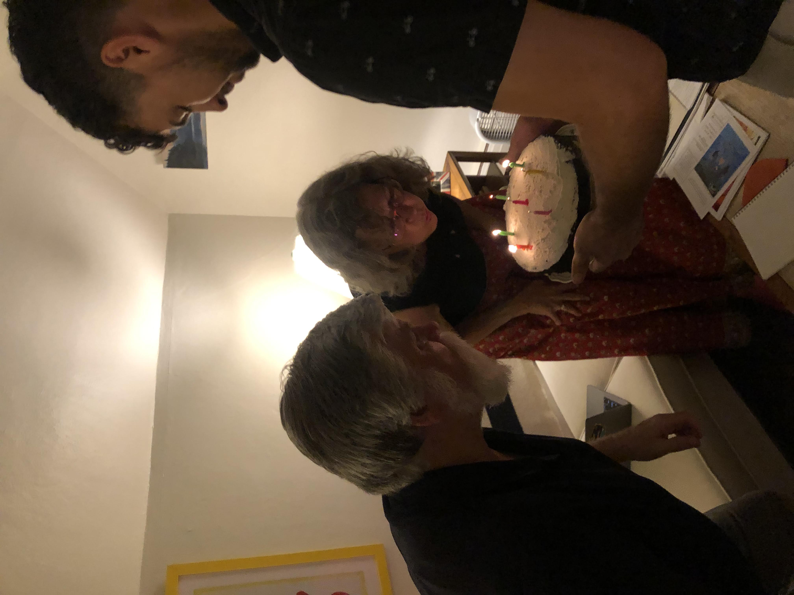
Mom and Tom are having the time of their lives as usual. Mother Susan now lives in Montreal full time, and is fully "installed" as minister at St. Andrew's, St. John's. We almost had all all of the extended siblings there, and most significant others! My in laws Jim and Donna, even my Aunt and Uncle Buck were able to attend. Made for a really lovely family reunion, and we got to embarass my mother properly in front of her congregation. Tom will be going on sabatical soon to finish some writing, and we're all looking forward to getting to spend more time with him.
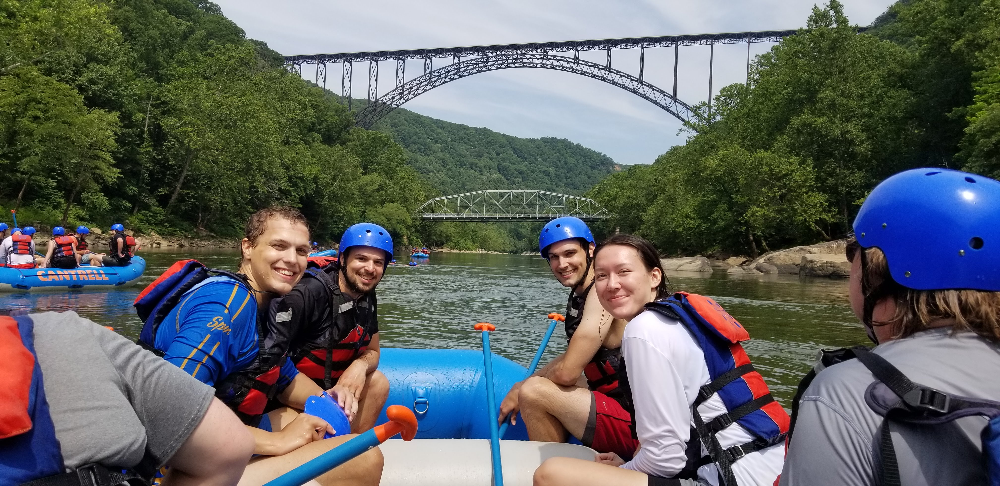
Bryan was joined by his girlfriend for our family gathering in Montreal. Her name is Bryn, and he's made every vain joke imaginable to keep ahead of the rest of us. He's going to be the best man in multiple weddings this next year, and to those who've entrusted him with this great task, I can only say: you could not have chosen a better friend.
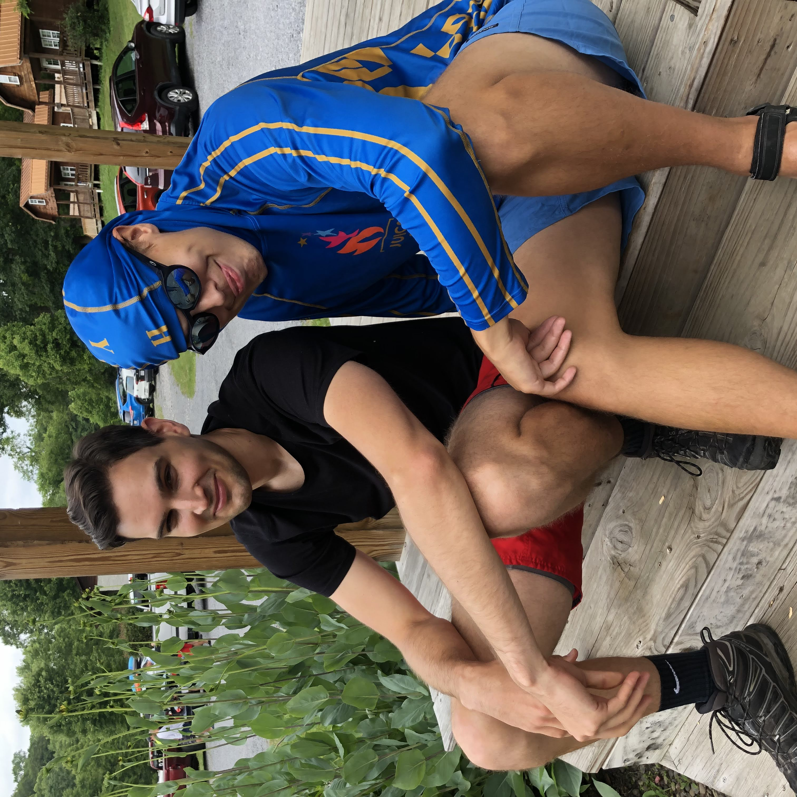
Charley made some waves this year and now lives in Philadelphia with his long term girlfriend. Still up to his usual antics, when we asked him about the most memorable things in his new home town, he gave me a run down of his new friends... namely the folks who work at a family owned ice cream shop next to his house. We were blessed with his presense at our holiday party where I gave him one simple task: "make sure Natalie's glass is never empty". Natalie has banned this for next year.
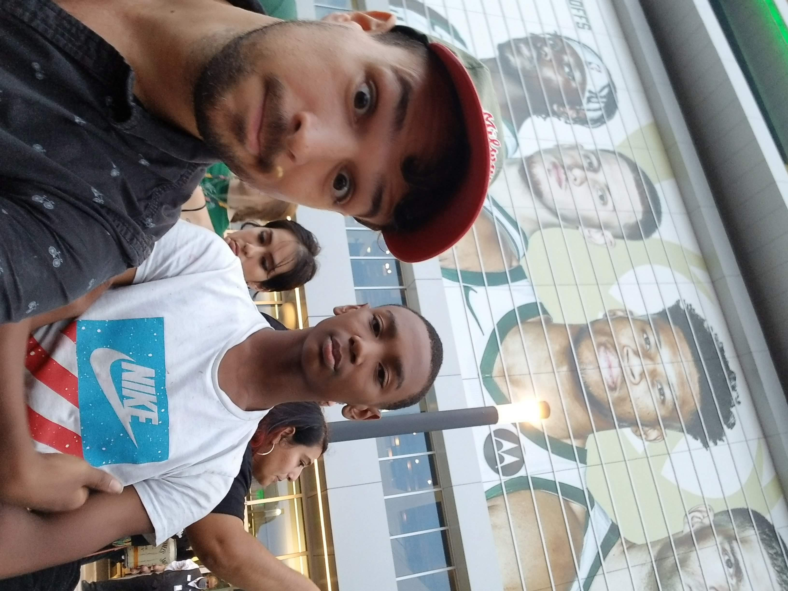
The Little Brother has an exciting new chapter in his life stretching out in front of him. This fall, he and his family moved to Phoenix Arizona! We're still keeping in touch, but a bit more remotely than normal. His love of all things anime is proving to be an easy bond for us.
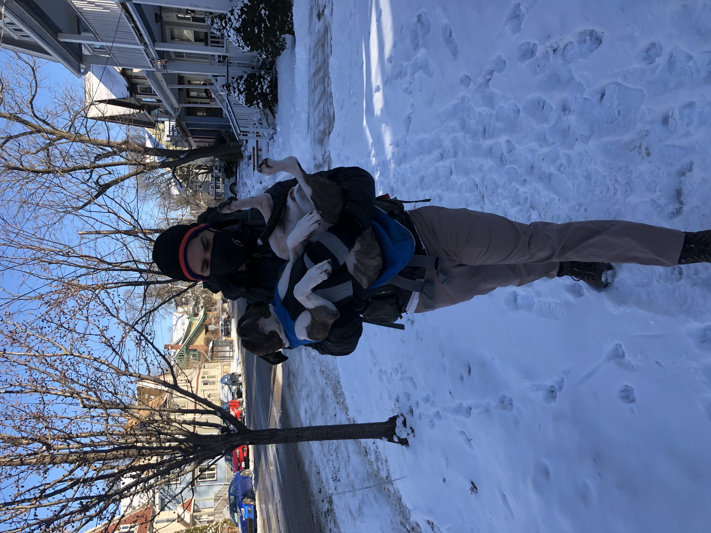
Jules has had...not the best year, objectively. Our little purebred doggo has proven that simply knowing that your genetic pool is narrow, makes you more prone to fun things like cancer with tumors on your face. Taking it in stride, Jules now has a villanous scar running from snoot to her eyeball, and her lip now has, medically speaking, an "Elvis curl".
Till next year, be of good courage, and know you are loved.
Cheers, Alex